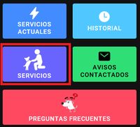

En el menu principal podra seleccionar en el boton SERVICIOS para seleccionar el servicio que desee contratar

Una vez que se encuentre en la sección SERVICOS, podrá elegir el tipo de servicio que desee, optar por filtrar la zona o simplemente seleccionar la opción BUSCAR AVISOS y traerá todas las zonas.
Aquí podrá ver el detalle de cada servicio brindado y contactarse con cada especialidad